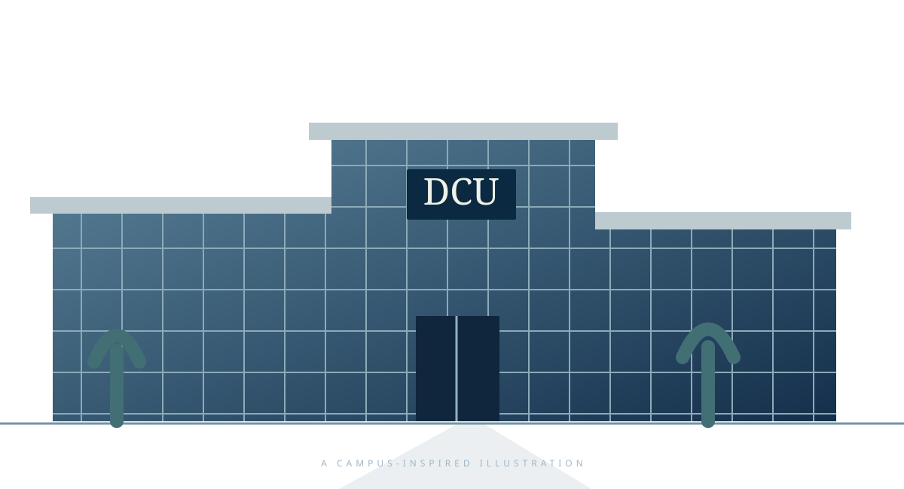

Data & databases
SQL · PL/SQL · Python · Data validation · Reconciliation
See the RFM calculations in Customer Lens and SQL controls in Report Relay.A AN INDEPENDENT PORTFOLIO
I’m Shaik Arham Saquib. I connect enterprise reporting experience at Hitachi with data analytics and explainable AI research at Dublin City University.

EPISODE 04 / THE PROJECT ARCHIVE
Working demonstrations and co-authored research. Open a title for the approach, evidence and links.
The three analytics/reporting demos were built in October 2026 using fictional data. Demo statistics describe the samples, not commercial results.
EPISODE 01 / THE PROFILE
01HYDERABAD → DUBLIN / ORIGIN & DIRECTION
My work sits where enterprise systems, reporting and practical problem-solving meet. At Hitachi Digital Services, I investigated data issues, supported Oracle-based environments and worked with teams on reliable reporting and controlled system changes.
At Dublin City University, I extended that foundation into machine learning and explainable AI. Now I’m looking for Data Analyst, BI, Reporting Analyst and Application Support opportunities in Dublin and across Ireland.
EPISODE 02 / EXPERIENCE

03 / DUBLIN CITY UNIVERSITYEPISODE 03 / DUBLIN CITY UNIVERSITY
At Dublin City University, my MSc connected data analytics with machine learning and explainable AI. My co-authored practicum explored residential energy-load scheduling using XGBoost, SHAP and an LLM scheduling module.
EPISODE 05 / THE TOOLKIT
SQL · PL/SQL · Python · Data validation · Reconciliation
See the RFM calculations in Customer Lens and SQL controls in Report Relay.Oracle ERP · OBIA / OBIEE · ODI · Power BI · ETL monitoring
Enterprise reporting and application-support experience at Hitachi. The portfolio dashboards use HTML and JavaScript.Explore my experience ↗XGBoost · SHAP · Forecast evaluation · Explainable AI
Co-authored DCU research on explainable residential energy scheduling.EPISODE 06 / RECOGNITION
HITACHI / Q4 FY24
Recognition for contributions to BI and data-analytics transitions, collaboration and delivery.
Dublin City University · Sep 2025–Aug 2026
CMR Institute of Technology, Hyderabad · 2019–2023
CONTINUED LEARNING
Cloud training · Reporting and analytics
2023 AI Foundations
Customer service and support operations
THE NEXT CHAPTER / DUBLIN, IRELAND
Open to data, business intelligence, reporting and application-support opportunities in Dublin and Ireland.
sarhamsaquib@gmail.com